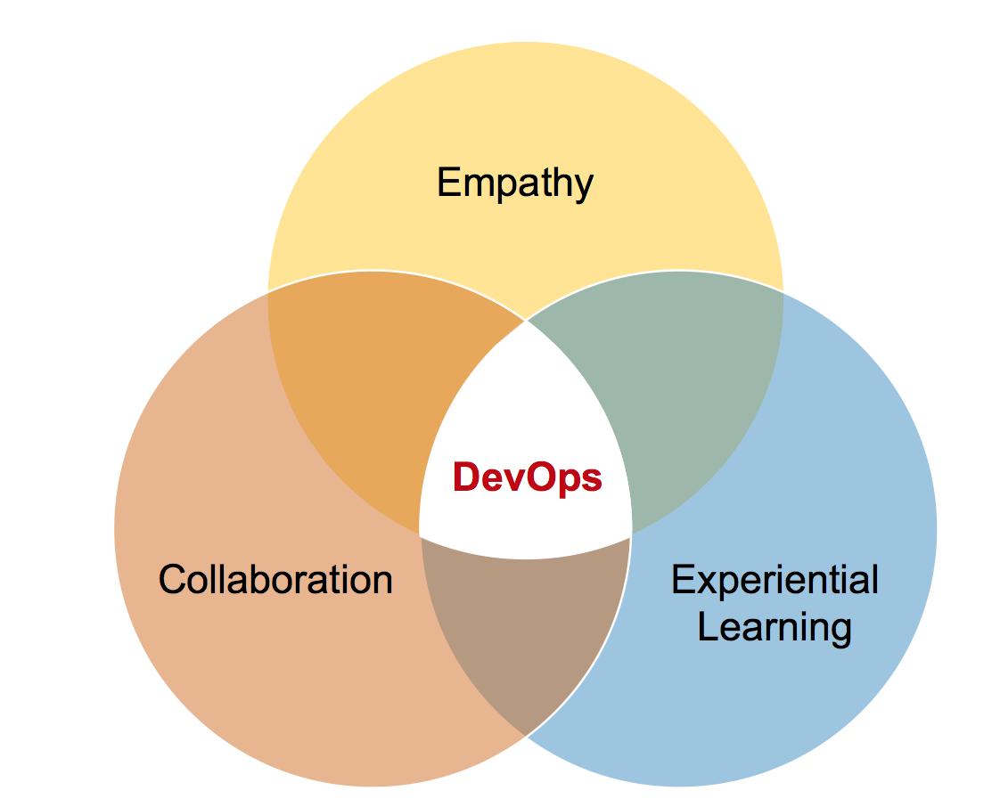
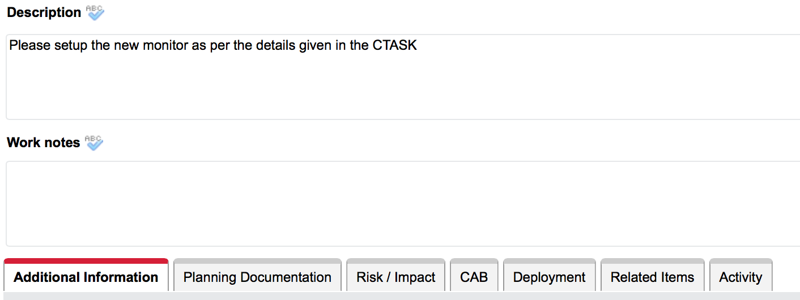
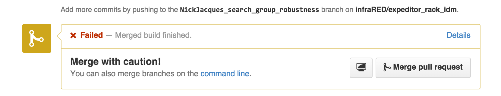
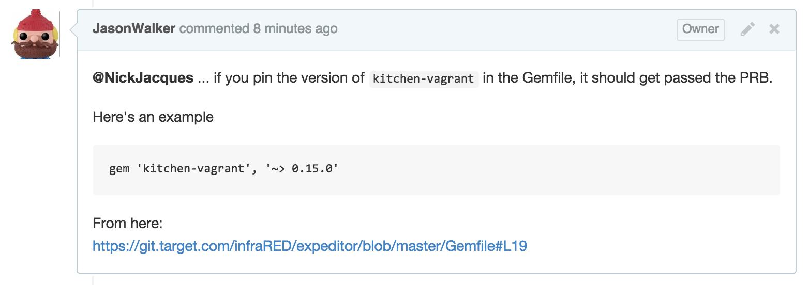
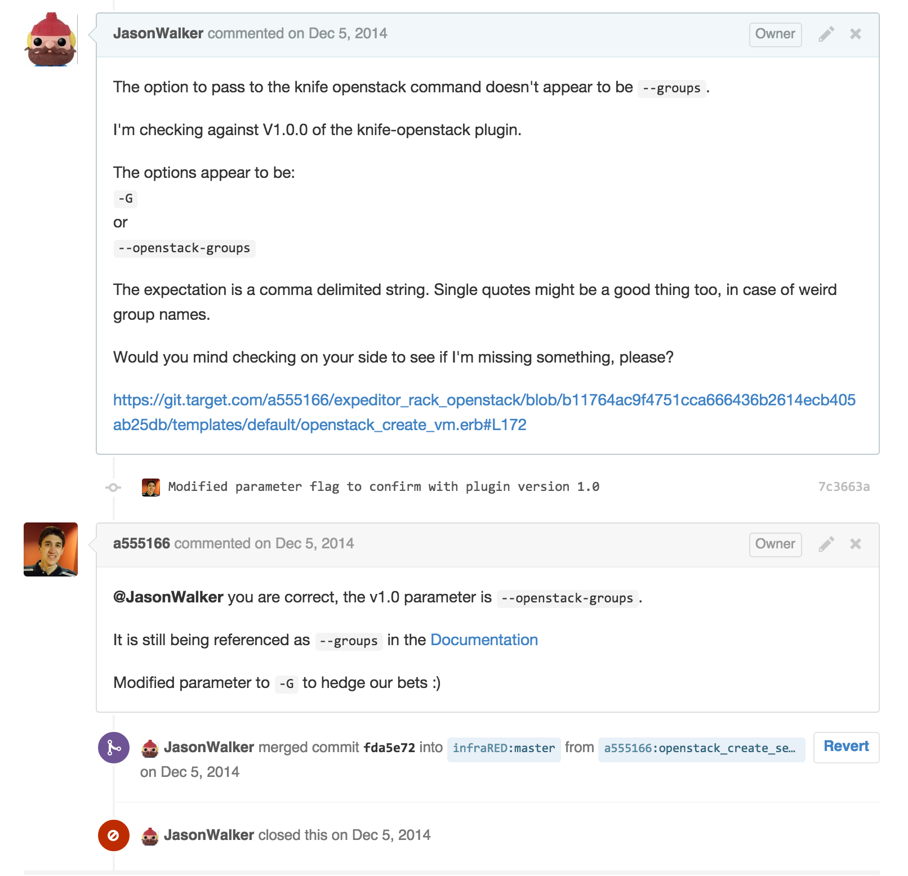

ITSM Governance & Infrastructure as Code
Jason Walker
@TheDesktopheroCreated with reveal.js
About me
Father of 5
Grandfather to 2
Born in Delaware
Lived in climates with temperature deltas of over 170 F
About me
Worked at Target since 2000(ish)
Chase Bank for a few years
Too many kitchen jobs prior to count
(not a Test Kitchen plug)
Current role
A lead engineer in our Infra-Ops world @TGT
Current role
Minister of Culture
#DOTGT
long story
Current role
System development
Life cycle driven
Current role
Studier of LEAN
Current role
Practicing 'goat'-ocology
aspiring goat, if nothing else
Past roles
Integration engineer (files, messages, web, ETL)
Telephony engineer
Systems developer
ITSM Governance
What are we talking about?
Quick context
[ITSM] is thus concerned with the implementation of quality IT services that meet the needs of customers, and is performed by the IT service provider through an appropriate mix of people, process and information technology.
https://www.axelos.com/Corporate/media/Files/Glossaries/ITIL_2011_Glossary_GB-v1-0.pdf
Why do you get amped about this topic?
So delighted you asked!
DevOps correlation directly tied to ITSM outcomes

Three take-aways, two topics:
ITSM and IAC
ITSM Governance is a key differentiator(/enabler) to an enterprise IAC movement {quality}
ITSM Governance, as an obstacle to IAC, will be more ignored than acknowledged (because code wins!) {meet the needs}
ITSM Governance can be accomplished through the (same)/similar principles of CI/CD {mix of three}
Key take-away #1
ITSM Governance is a key differentiator for enterprise adoption of IAC

https://farm9.staticflickr.com/8160/7214525854_41ea7719a4_o.jpg
Key take-away #1
Quality: measurement in the form of a consistent & predictable result(s) against similar kinds of products or common types
Key take-away #1
Defining the success/fail criteria, for quality, comes from customers!

http://www.giftedwithgrit.com/wp-content/uploads/2014/01/successimage.jpg
Key take-away #2
When used as an obstacle, the bold and clever will look for workarounds to the process.
http://r.fod4.com/s=w750,pd2/o=80/http://p.fod4.com/p/media/d9d2001d35/kmff9BhTGGkOkhU1AhxI_Drawer%20Lock.jpg
Key take-away #2
Welcome to my silo; please fill out my form
Key take-away #2
Because code wins, the 'form' can be different ... empowering!
Key take-away #2
Feedback can be enabled with velocity => continuous, automated testing gives context; enables the community to build better software, systems, applications, stacks
Key take-away #2
Community focus on fixes allows sharing of information
Key take-away #2
Less meeting time and more #DO time
Key take-away #2
Important CHANGE domain metadata for ITSM:
Who requested the change?
What is actually being changed?
When is the change being implemented?
How well tested is the change?
Key take-away #3
Lean back on the DevOps practices to understand the mix of people, process, and technology in ITSM
Key take-away #3
Value Stream your process with real data to enable process reviews and find the X/Y coordinates of what to work on

http://upload.wikimedia.org/wikipedia/commons/9/99/ValueStreamMapParts.png
Key take-away #3
We leverage CI/CD to not only deliver the end-to-end IT asset but leverage CI/CD to manage and extend the services layer - iteratively
Key take-away #3
Rationalize patterns > the implementation tool; and use a tool that empowers your community to feel safe to invest his/her respective time
We landed on Chef for config/state management
But that's only part of the tech stack ...
Recap
ITSM and IAC
- Customers first on both sides of the governance conversation- ITSM governance needs as much kaizen as every other component of the IT delivery
- Use small, iterative changes to evaluate progress; allows people to see revel in battles won and quickly forget about those lost
THE END
- @TheDesktophero
- Check out the @TGT booth in the expo
- Target Tech Blog
- Target Github OSS
Special thanks for the infraRED crew @TGT